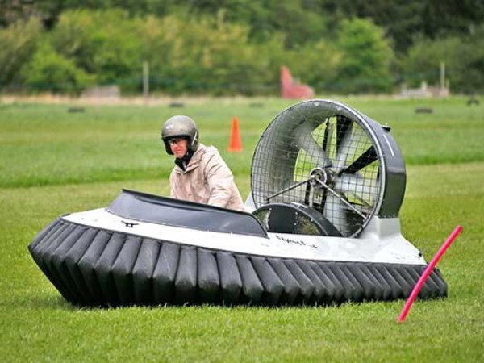
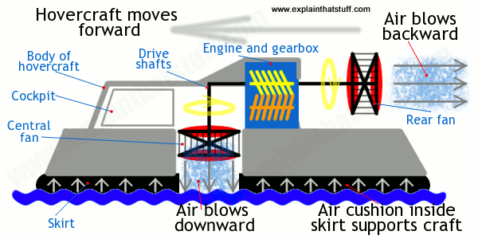

Hovercraft
A hovercraft is a vehicle that “flies like a plane, float like a boat, drive like a car. A Hovercraft, also known as an air cushion vehicle or ACV, is a craft capable of travelling over grass, water mud or ice and other surface. Hovercraft are hybrid vessels.
History
The first design of hovercraft given by Emmanuel Swedenborg in 1716. In 1931 Finnish aero engineer Toivo J.Kaario began designing a developed version of a vessel using an air cushion and built a prototype.
Invention
Sir Cristopher Cockerell invented and patented the hovercraft in 1955. From there on the idea was implemented for a variety of implementations of this technology.
Components of a hovercraft
Propeller- pushes the
hovercraft ahead by
pushing air behind.
Fan- It inflates the cushion
containing within the skirt
beneath the craft as well as
to provide thrust and
reduce friction.
Hull- This is where the
driver operates the
hovercraft. It is the main
body to which the other
parts are attached.
Lifting System
This consist of a centrifugal fan attached to a motor or an engine, which provides air for the cavity underneath the craft (called the plenum chamber) and also for filling the skirts.
Thrust System
This consists of propeller that moves from in front of the craft and accelerates it out the back. This generates thrust which pushes the craft forwards.
Advantages
Travel over any surface.
Shortcutting routes, especially in marshy and coastal
areas.